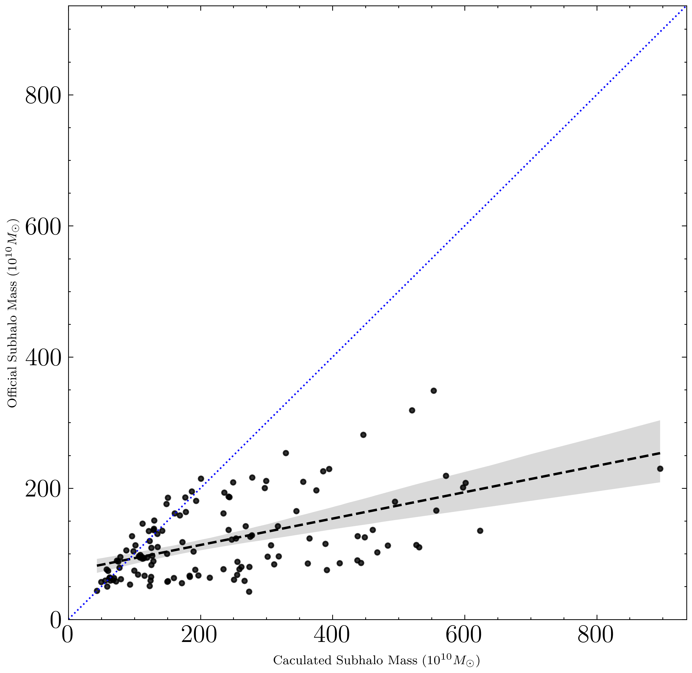

Plot test11
The following modules installed.
- import illustris_python as il
- import numpy as np
- import pandas as pd
- import os
- import matplotlib.pyplot as plt
- from matplotlib.colors import LogNorm
- import glob
plt.figure(figsize=(7,7),dpi=400)
sns.regplot(data=df, x="cum_mass", y="subhalo_mass")
plt.xlim(0,max_mass)
plt.ylim(0,max_mass)
plt.plot([0,max_mass],[0,max_mass])
plt.xlabel("Caculated Subhalo Mass ($10^{10} M_\odot$)")
plt.ylabel("Official Subhalo Mass ($10^{10} M_\odot$)")
plt.grid()
plt.show()

127
array([[1. , 0.53276543],
[0.53276543, 1. ]])
d0 = go.Scatter(
x=df["cum_mass"], # xの値
y=df["subhalo_mass"],
mode="markers"
)
d1 = go.Scatter(
x=[0,max_mass],
y=[0,max_mass],mode="lines"
)
plot=[d0,d1]
# go.Figureでグラフ作成
fig = go.Figure(data=plot) # plotは引数data
fig.show()